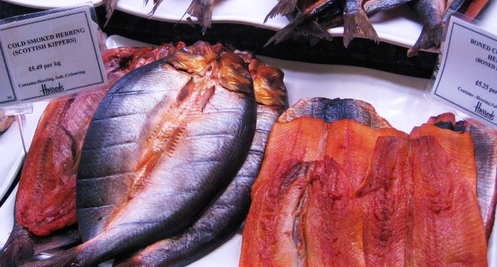
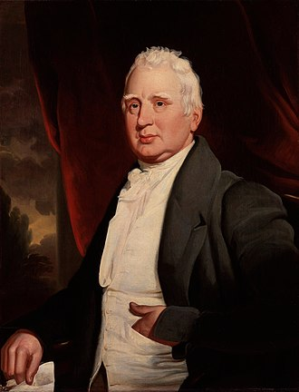

총리와 청어 - red herring이란 무엇인가 ?
게시: 2019-07-25T06:30:07+09:00
어제 페이스북에서 재미있는 사진을 보았습니다. 새로 영국 총리가 된 보리스 존슨의 우스꽝스러운 사진들이었지요. 그 중에서 하나는 먹을 것과 관계되어 있어 특히 제 관심을 끌었습니다. 보리스 존슨이 손에 훈제 청어(kipper)를 들고 뭔가 떠들고 있는 사진이었습니다. 대체 무슨 사연이 있길래 정치인이 대중 앞에서 손에 훈제 청어를 들고 연설을 했을까요 ?
관련 뉴스를 뒤져보니 그렇지 않아도 사람들이 모두 우습게 여기고 놀리는 보리스 존슨이 더욱 우습게 보일만 한 사건이 있었더군요. 보리스 존슨이 훈제 청어에 관해 연설을 한 것은 보수파 정치 모임에서였습니다. 보리스 존슨의 주장에 따르면 맨(Man) 섬의 훈제 청어 상인이 훈제 청어를 얼음팩(ice pillow)으로 포장해야 했는데, 이는 '무의미하고 비용만 높이는데다 환경 파괴적'인 일이며, 이 모든 것은 EU의 비합리적 규제 때문이라는 것입니다. 만약 그런 규정이 존재한다면 그건 정말 보리스 존슨의 주장대로 무의미한 규정일 것입니다. 훈제 청어는 대표적인 장기 보전 식품이므로 그걸 얼음으로 포장하는 것은 통조림을 얼음 포장하는 것과 마찬가지 일이기 때문입니다. 그는 이 비합리적인 EU 규제에 대해서는 어느 영국 신문사 편집인으로부터 들었다고 언급하면서, 이런 비합리적인 규제나 남발하는 EU로부터 영국이 탈퇴해야 한다고 주장했습니다.
대체 어느 신문사 편집인인지는 모르겠으나, 이는 전형적인 가짜 뉴스였습니다. 보리스 존슨의 연설 내용에 발끈한 EU 측에서 밝혔는데 EU에는 그런 규정이 없으며, 영국에 그런 규제가 있다면 그건 순수하게 영국 국내 규정이라는 것입니다. 그런데 그걸 지적하는 리투아니아의 EU 감독관인 안드리우카이티스(Vytenis Andriukaitis)는 트위터에 이렇게 쓰며 보리스 존슨을 조롱했습니다. "생선은 머리부터 먼저 상합니다. 유력한 총리 후보로서, 보리스 당신은 머리를 차갑게 유지하실 필요가 있을 겁니다. 그러니 결국 그 얼음팩이 완전히 의미가 없는 일은 아닐 겁니다." 보리스 존슨은 영국에서 모든 이들이 조롱거리로 즐겨삼는 인물이긴 한데, 이 뉴스를 전한 기사의 제목도 의미심장했습니다. 아래와 같았거든요. "Boris Johnson’s kipper claim is red herring, says EU" 보리스 존슨의 훈제 청어 주장은 붉은 청어(사실을 왜곡하는 것)라고 EU가 말했다. 여기서 red herring, 즉 붉은 청어라는 것은 무엇일까요 ? 원래 청어는 등푸른 생선인데, 이걸 훈제하면 좀 붉은 색을 띠게 됩니다. 그래서 붉은 청어란 곧 훈제 청어를 뜻하는데, 이는 관용어로서 '사실을 오도하는 것, 잘못된 실마리' 등을 뜻합니다. 왜 훈체 청어가 그런 불명예스러운 뜻을 가지게 되었을까요 ?

여기에는 몇가지 설이 있습니다. 주로 통용되는 이야기는 영국에서 여우나 토끼 등을 쫓는 사냥개를 훈련시킬 때, 일부러 그 추격로를 가로질러 훈체 청어를 문질러 둠으로써 사냥개를 혼란에 빠뜨리는 함정을 놓는다고 합니다. 미숙한 사냥개는 처음에는 강렬한 훈제 청어의 냄새에 이끌려 원래 쫓던 사냥감을 놓치게 되지만 점차 익숙해지면 혼란을 일으키지 않는다는 것이지요. 실제로는 사냥개를 훈련시킬 때 훈제 청어를 이용한 그런 함정을 쓰는 관행은 없었다고 합니다. 그러나 나폴레옹 전쟁 당시인 1807년 2월 14일, 정기 간행물인 Political Register에서 영국 언론인인 윌리엄 코벳(William Cobbett)이 아래와 같은 기사를 내놓으면서 붉은 청어라는 것이 뭔가 사실을 오도하는 것이라는 뜻으로 거의 굳어져 버렸습니다. 거기서 코벳은 자신이 어릴 때 사냥개 훈련에서 훈제 청어를 썼다고 언급하면서, 제4차 대불 동맹 전쟁에서 나폴레옹이 패배했다고 잘못 보도한 영국 언론을 비판하며 이렇게 썼습니다. "It was a mere transitory effect of the political red-herring; for, on the Saturday, the scent became as cold as a stone."
"그건 정치적 사실의 왜곡(붉은 청어)에 의한 그저 일시적인 효과일 뿐이었다. 토요일이 되자 그 냄새는 마치 돌처럼 차갑게 식어버렸다."

(Red herring이라는 단어를 영국 사전에 올리는데 큰 공헌을 한 윌리엄 코벳입니다. 가짜 뉴스를 전한 언론들을 비판하면서 쓴 red herring이란 단어 자체가 알고 보면 잘못된 정보에서 나온 이야기일 수도 있다는 것은 아이러니입니다.)
진실이 무엇이든 간에, 이렇게 사람들의 머리 속에 강한 인상을 남기면 정치인이나 언론인이나 원하는 바를 이룬 셈이지요. 아무리 터무니 없는 가짜 뉴스라고 해도, 일단 유력 정치인 또는 유력 일간지가 언급을 하면 그 사실 자체가 뉴스가 되어 대중에게 인식되니까요. 사실 그런 가짜 뉴스가 범람하는 것은 굳이 일부 정치인이나 언론 때문만은 아닙니다. (이건 저도 마찬가지입니다만) 사람들은 누구나 자신이 듣고 싶어하는 뉴스를 그냥 믿어버리는 경향이 있는데, 그런 점이 가짜 뉴스 전성시대를 이끄는 주된 요인 아닌가 싶습니다.
그나저나 저 신임 영국 총리는 왜 하필이면 왜곡의 상징인 훈제 청어에 대해 왜곡된 주장을 펼쳤던 것일까요 ? 그냥 재수가 없었던 것일까요 뭔가 시사하는 바가 있었던 것일까요 ?
Source : https://www.ft.com/content/1ba5b9c4-a954-11e9-b6ee-3cdf3174eb89 https://english.stackexchange.com/questions/30239/where-does-the-phrase-red-herring-come-from https://en.wikipedia.org/wiki/Red_herring